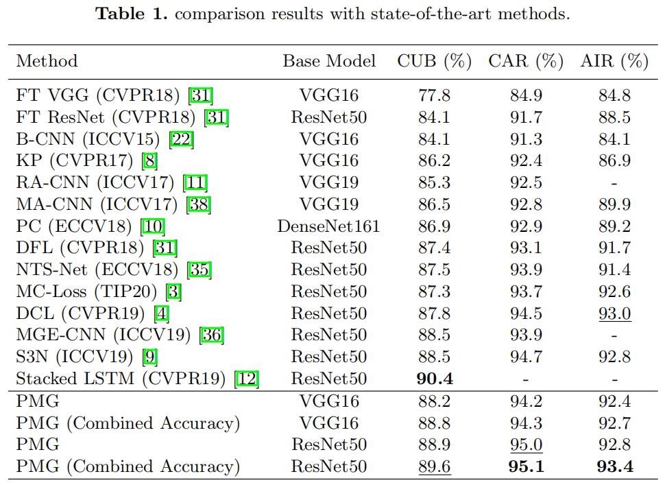

细粒度：PMG¶
综述¶
会议时间：European Conference on Computer Vision 2020 (ECCV, 2020)
论文地址：https://arxiv.org/pdf/2003.03836.pdf
源码地址(PyTorch版本)：https://github.com/PRIS-CV/PMG-Progressive-Multi-Granularity-Training
针对领域：细粒度图像分类(FGVC)
关键词：细粒度分类、渐进训练、拼图补丁
主要思想¶
在以前的细粒度分类中，算法主要关注如何定位最有区分度的区域、互补区域以及多粒度区域，但是很少有算法关注如何将不同的粒度特征融合起来。跨越多粒度信息，探索不同粒度区域之间的互补关系有助于提高算法的预测精度，比如专家在识别鸟的类别中，有时需要结合鸟头部的整体结构(粗粒度)与鸟喙形状的细节(细粒度)来综合判断一个鸟的种类。因此，仅单独考虑如何识别有区分度的区域(单独地分析不同的特征)往往是不够的，将不同粒度的特征以协同的方式融合在一起可以进一步提升网络的识别效果，依据这个想法，再结合细粒度的区分性信息存在于不同的视觉粒度中这一思想，作者提出了一种既可以识别最具有区别性的粒度，又可以将不同粒度特征有效地合并的算法，该算法主要由两部分组成：①有效融合了不同粒度特征的渐进训练策略；②鼓励网络以特定粒度学习特征的随机拼图生成器。
渐进训练策略：与现有的技术不同(先检测零件，后以特定方式融合)，渐进训练框架在训练期间分步骤工作，其中在每一步，训练集中于在网络相应阶段培养特定的粒度信息。首先从更稳定，更精细的粒度(小区域)开始，逐渐转向粗糙的粒度(大区域)，避免了大区域中，比较大的类内变化而带来的混乱。当每个训练步骤结束时，当前步骤训练的参数将作为其参数初始化传递到下一个训练步骤，这种传递操作本质上可以让网络能够基于其先前训练步骤中学习的区域来挖掘更大的粒度特征。所有阶段提取的特征再经过最后一步连接，从而确保让网络充分探索互补关系，融合多粒度特征。
但如果只应用渐进训练策略，则网络学习到的多粒度信息可能会集中在相似的区域(粗粒度特征与细粒度特征集中在一块，容易受到粗粒度信息的干扰)，因此，作者又设计了拼图生成器来解决这个问题。
拼图生成器：通过将原图进行均匀地划分并随机打乱(通俗地来讲就是均匀划分成拼图碎片，然后进行打乱)，可以形成不同粒度级别的特征，其中补丁大小与特定的粒度一一对应。它本质上迫使网络的每个阶段关注局部的补丁，限制了网络的关注区域大小，而不是关注网络的整体，因此通过学习该”拼图”可以使网络学习到特定的粒度级别信息。下图展示了该方法的效果：

其中(a)和(b)是一般方法，( c )和(d)是我们提出的方法。通过利用交叉熵损失训练的传统神经网络(a)倾向于找到最有区分度的部分。而其他算法(b)侧重于如何找到更多有区别的部分。( c )是我们渐进式训练得到的结果，由低级阶段到高级阶段逐渐定位辨别信息，并且将所有训练阶段提取的特征连接在一起，确保探索其中的互补关系；(d)表示在拼图生成器的帮助下，在每步中学习的零件粒度被限制在补丁大小中。
网络结构¶
为了解决大的类内变化，作者鼓励模型在较浅层中学习稳定的细粒度信息，并随着训练的进行逐渐将注意力转移到较深的层中学习大粒度级别的抽象信息。
该网络的设计是通用的，可以嵌入到任何特征提取网络中实现细粒度分类。以ResNet为例，假设特征提取网络有L个阶段，抽取后S个阶段输出的特征图，用于渐进训练，分别将他们传入预设好的卷积模块(Conv Block)将其转化为向量，得到S组特征向量之后，一方面分别将其传入不同的分类模块(classification module)，得到不同粒度信息下的预测概率，另一方面将所有的特征向量合并，传入最后的分类模块，得到融合了所有粒度信息下的预测概率。其中，卷积模块由两层卷积以及最大池化组合而成，分类模块由两层带有标准化操作的全连接层以及一层Elu激活函数组成(具体实现方式请见源码笔记)，具体的网络结构如下图：
假设取出后S层(图中以S=3为例)的输出用于渐进训练，则网络每次迭代都有S+1步，其中Conv Block表示构建的卷积模块。前S步分别以前S层的特征作为类别预测的依据，用于网络的渐进训练过程，并且训练数据由拼图生成器得到；最后一步将前S层的特征融合，用于让网络探索不同粒度之间的互补联系。在每一步中，相应分类器的输出将用于损失的计算和网络参数的更新。
渐进训练阶段¶
所谓的渐进训练就是先训练低级阶段，然后逐步增加新的训练阶段，由于低级阶段的感受野和表征能力(特征表示的能力)有限，因此网络被迫首先探索局部细节的辨别信息(discriminative information)。与直接训练整个网络相比，模型在特征逐渐被送到更高阶段时，网络会定位从局部细节到全局结构的区别性信息，而不是同时学习所有粒度级别的信息。
为了训练来自每个阶段的输出和级联阶段(将所有特征融合后的阶段)的输出，作者采用交叉熵损失(CE)来计算真实标签和预测概率之间的损失：
每次迭代中，一批数据会被使用S+1个阶段，并且我们在每个阶段中只训练一个阶段的输出。每次训练中，当前预测结果所使用的参数都将得到优化，因此前几个阶段的参数可能会被优化多次(后几个阶段也会优化前几个阶段的参数)，这可以帮助模型在每个阶段进行协同工作。
拼图生成器¶
为了给渐进训练不同的阶段生成输入图像，强制模型在每个训练阶段中学习特定于相应粒度级别的信息，作者利用拼图游戏的思想，设计了拼图生成器模块，该模块可以将原图的粒度信息规定到一定的级别中，生成类似打乱后的拼图图像，拼图块的大小反应了粒度的等级，通过学习该图，可以迫使网络学习该等级的粒度信息。
给定一个宽与高为W和H的图像，我们将它平均分成n×n个补丁，每份图像大小均为(W/n, H/n)，需注意的是，n必须可以整除图像的宽W与高H。然后再将补丁的顺序打乱，使其以特定的粒度级别表示原图像的信息，生成新的图像P(d, n)，其中，图像的粒度级别由超参数n控制。
关于超参数n的选择，需满足以下两个条件：
（1）补丁(粒度级别)的大小要小于对应阶段的感受野（也就是patch的大小要大于感受野大小），否则会降低拼图生成器的性能；
（2）补丁的大小需要随着各阶段感受野的增加而成比例地增加。
注意：通常两个相邻的阶段感受野是两倍的关系，因此两个相邻阶段的特征图粒度等级也是两倍关系，最后一阶段的输入为原图像，即粒度级别最大的图像，倒数第二阶段图像被平均划分为2×2份(具体可见网络结构图)，再往前图像被平均划分为4×4份，依次类推。
需注意的是，拼图生成器不能总是保证所有小于补丁的部分是完整的，有可能会将某个区域拆分。但这并不会妨碍模型的训练过程，因为作者采用了随机裁剪策略（用于数据的扩充，具体实现过程可见源码），因此即使是同一张图片，它每次也是以不同的角度参与训练的，所以每次划分的补丁也并不是完全一样的，拼图生成器并不会在每次迭代中将较小的辨识部位分割。这反而会在训练过程中带来一个额外的优势，迫使模型在特定的粒度级别上找到更多有区别的部分。
测试¶
在测试步骤中，只需要将原图输入到训练好的模型中即可，不需要利用拼图生成器将其打乱。该模型可以生成两种预测概率：
（1）C1：只使用融合后的特征图来预测最终的类别概率，可以删除前S个阶段的全连接层，从而减少计算量，最终结果C1可以表示为：
（2）C2：基于特定粒度信息的输出预测是唯一并且互补的，当以相等的权重将所有的输出组合在一起时，可以达到更好的性能，多输出组合预测C2可以表示为：
实验¶
可视化¶
作者利用了GradCAM实现了对PMG模型和基线模型(纯特征提取网络训练)最后三个阶段的卷积层可视化，对比图如下：
基线网络以ResNet50为例，列(a)-©是PMG模型的第3阶段到第五阶段的卷积层可视化，列(d)-(f)是基线网络的第三阶段到第五阶段的卷积层可视化。
（a）列表明，模型在第三阶段集中关注图像的小粒度判别区域，如鸟的眼睛、羽毛图案或者纹理，而( c )表明，模型在第五阶段更侧重关注图片的整体结构信息，因此，本模型可以很好地给出基于小粒度到大粒度的区分部位预测。而基线模型只显示了最后阶段的正确注意力，这种对比表明渐进训练的中间监督过程可以很好地帮助模型在早期阶段定位有用的信息。另外，基线模型在最后的关注区域通常只集中在物体的一两个部分，而本模型的注意力关注区域几乎可以覆盖整个对象，这种对比表明拼图生成器生成的图像可以迫使模型在每个粒度级别学习更多有区分度的部位。
精度对比¶

总结¶
本文将渐进训练策略应用到细粒度分类任务中，提出了一种新的多粒度(PMG)训练框架，该框架主要由两部分组成：①以渐进方式融合多粒度特征的新型训练策略；②用于形成包含不同粒度级别信息图像的拼图生成器。通过将该两个模型加以组合，可以有效地使网络学习不同级别的粒度信息，并且可以使各粒度间的特征相融合，充分地让网络探索他们之间的互补关系。
注：以上仅是笔者的个人见解，若有错误，欢迎大家批评指正。
最后一次修改日期：2021年11月22日